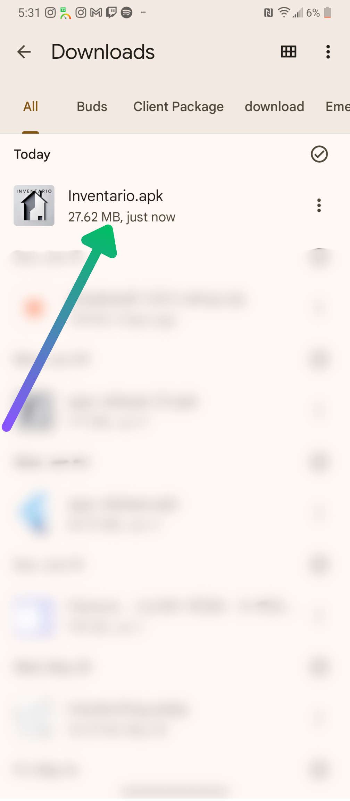
Aquí podemos apreciar la aplicación ya descargada. Presionamos sobre ella para comenzar
el proceso de instalación
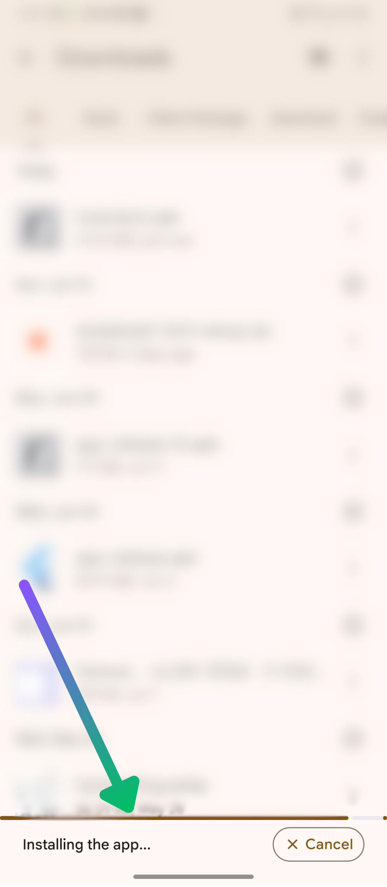
Esperamos hasta que se instale la aplicación, debería aparecer una barra de carga informando
el transcurso de la instalación.
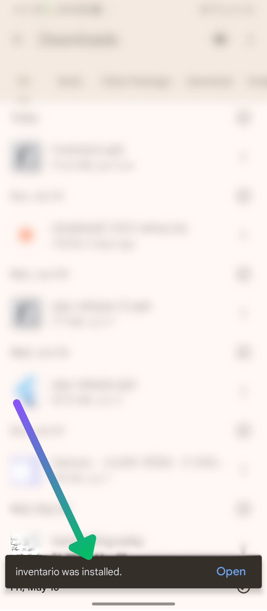
Una vez terminada la instalación al ver un mensaje de confirmación, se puede continuar al proceso
de configuración. ya dentro de la aplicación.
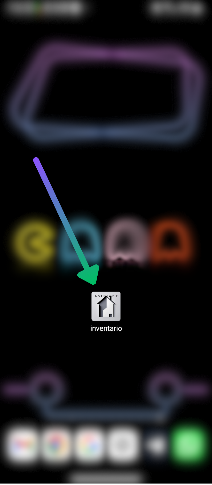
Una vez instalada la aplicación debería aparecer en el dispositivo con el icono del logo de la aplicación.
Esta es la primera pantalla dentro de la aplicación. Esta pantalla solamente se verá la primera
vez que se entra en la aplicación.
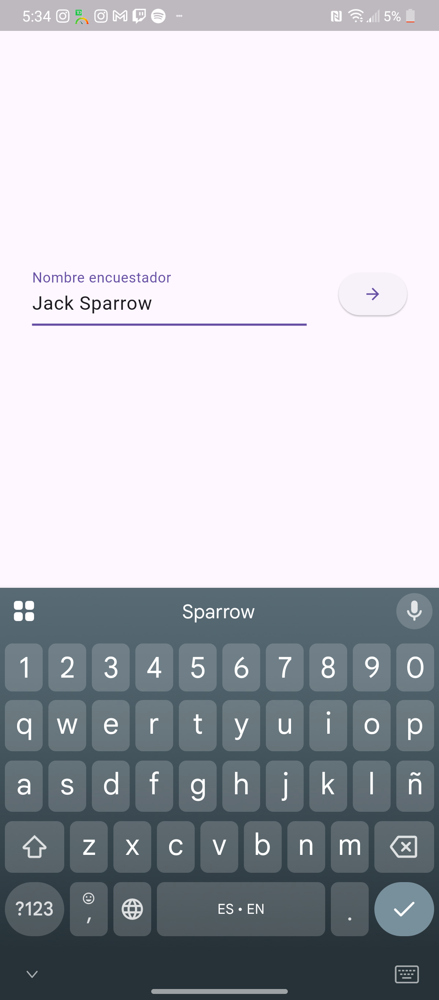
Una vez que se introduce el nombre del encuestador que operará
la aplicación en el dispositivo actual y se continúe, el nombre y los apellidos introducidos
quedarán registrados en la base de datos de la aplicación, y cada vez que se exporten los datos recogidos,
el nombre y los apellidos del encuestador serán adjuntados a esta base de datos exportada. Aunque se utilice la
herramienta "Limpiar Base de Datos", los datos del encuestador permanecerán intactos. Si se tiene
algún problema con esto, consultar la sección ___________
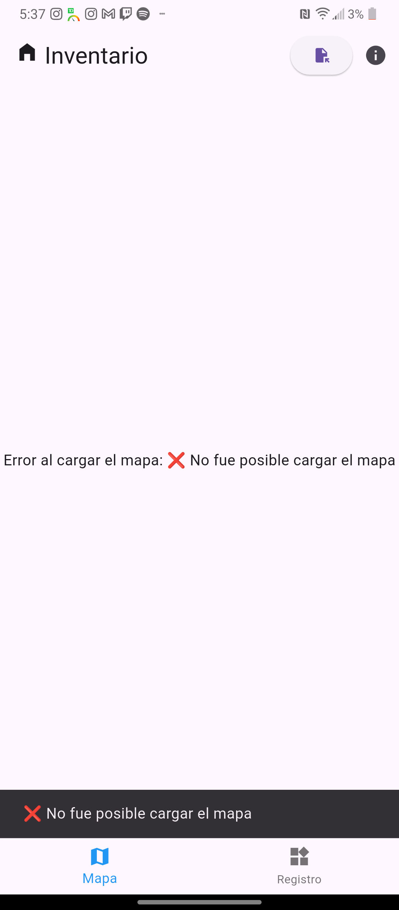
Si se tiene la version de la aplicación que no incluye el mapa(la que pesa alrededor de 26 mb),
inicialmente la aplicación no tendrá mapa cargado y por ende se mostrará en lugar del mapa, este mensaje de error.
En los pasos siguientes se explica como cargar el mapa de manera adecuada.
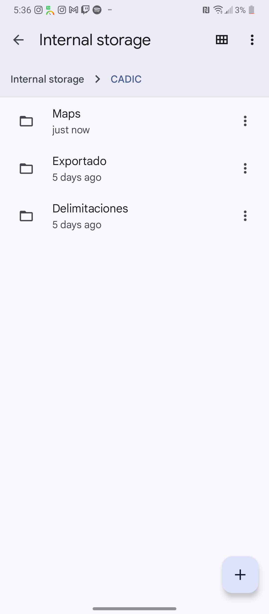
Al entrar por primera vez en la aplicación, se crear una carpeta llamada 'CADIC' dentro del directorio raíz del dispositivo.
Esta contiene tres subcarpetas: 'Maps', 'Delimitaciones' y 'Exportado'. Este es el directorio que la aplicación tiene para
importar los recursos que necesita y exportar los datos recogidos, por lo tanto, en estas tres subcarpetas estarán el mapa
en formato de archivo con extensión '.mbtiles', las delimitaciones, cada una con extensión '.geojson', y última base de datos
exportada; en las carpetas 'Maps', 'Delimitaciones' y 'Exportado' respectivamente.
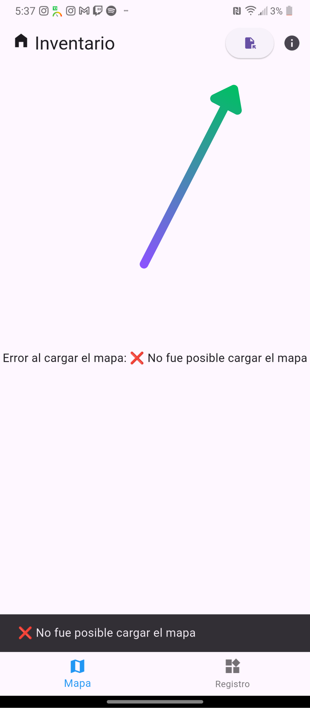
Para importar un mapa, se deberá proceder de manera manual, colocando el archivo con extensión '.mbtiles' que representa
el mapa, en la carpeta 'CADIC/Maps' explicada en el paso anterior; o se podrá proseguir con una opción ofrecida dentro
de la propia aplicación que se encarga de dejar al usuario seleccionar el mapa del sistema de archivos del dispositivo
y automáticamente copiar el archivo para la carpeta adecuada. Para acceder a esta última opción, se deberá primero presionar
en el botón que despliega y agrupa las opciones de importación/exportación, este se podrá ver señalado en la imagen.
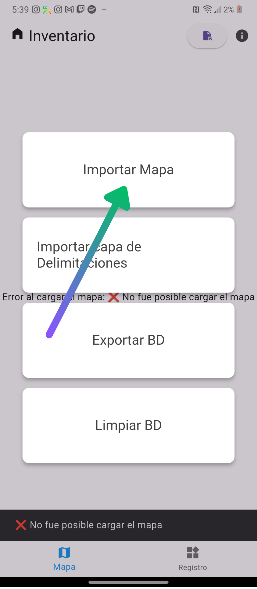
Aquí se pueden observar las opciones de importación/exportación de la aplicación. Aquí estarán las funcionalidades de
utilidad para importar un mapa, importar una capa de delimitaciones, exportar la base de datos y limpiar la base de datos.
En esta ocación utilizaremos la función de importar un mapa. Cuando esta opción es seleccionada, debería mostrarse el selector
de archivos del dispositivo, dando la opción de buscar el archivo del mapa de dentro del almacenamiento.
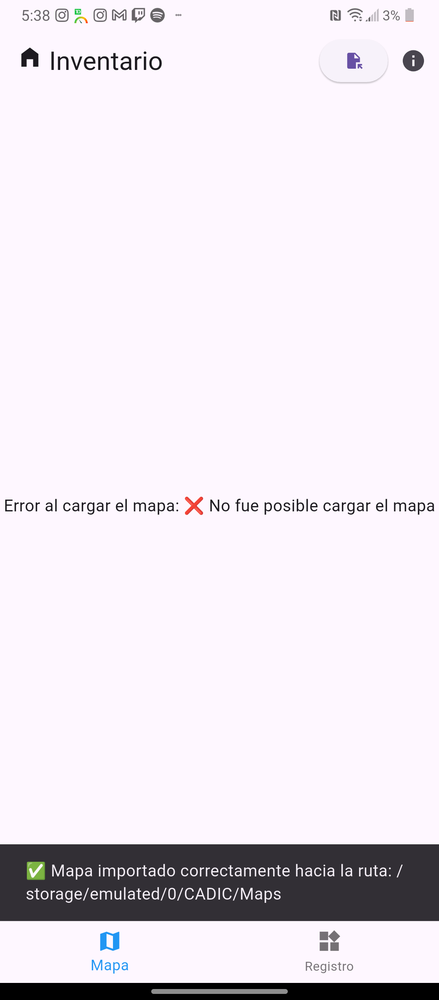
Luego de haber seleccionado el archivo del mapa desde el selector de archivos, debería salir un mensaje de confirmación de
importación en una barra auxiliar con fondo negro cerca de la parte inferior de la pantalla. Si esto no ocurre, es recomendable
copiar el mapa manualmente hacia la carpeta 'CADIC/Maps/'.
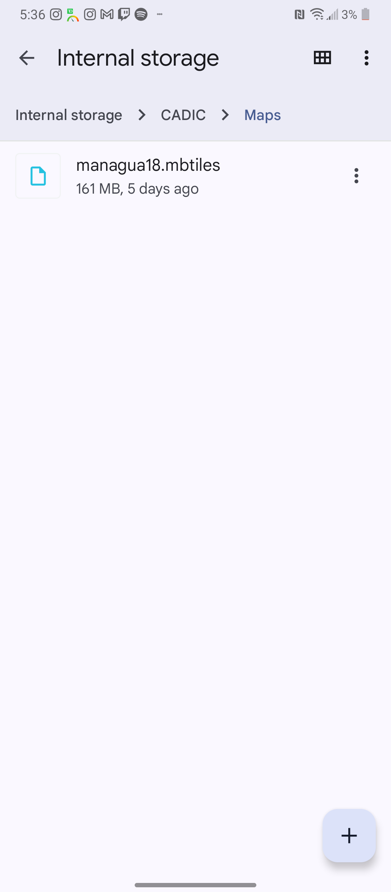
Después de haber importado el mapa con la funcionalidad en cuestión, debería haberse copiado y quedado en la carpeta 'CADIC/Maps/'
como se muestra en la imagen.
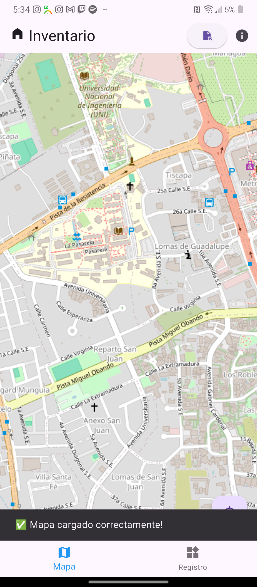
Al comprobar que el mapa está efectivamente en el lugar dicho. En caso de no haber cerrado la aplicación, se debería hacer, así
se cargará el mapa de manera apropiada al reabrirla. Luego de esto, el mapa cargará correctamente como se muestra en la imagen.